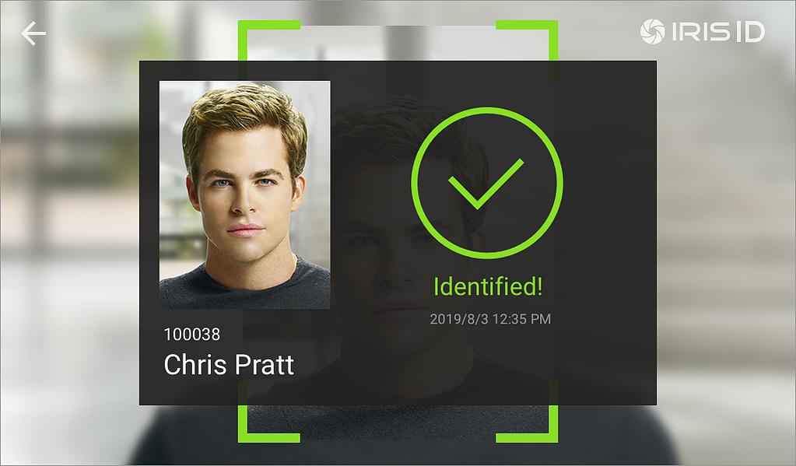
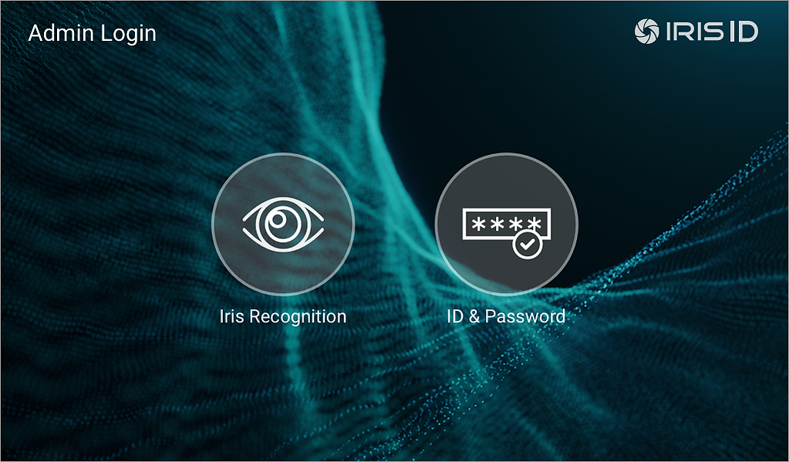
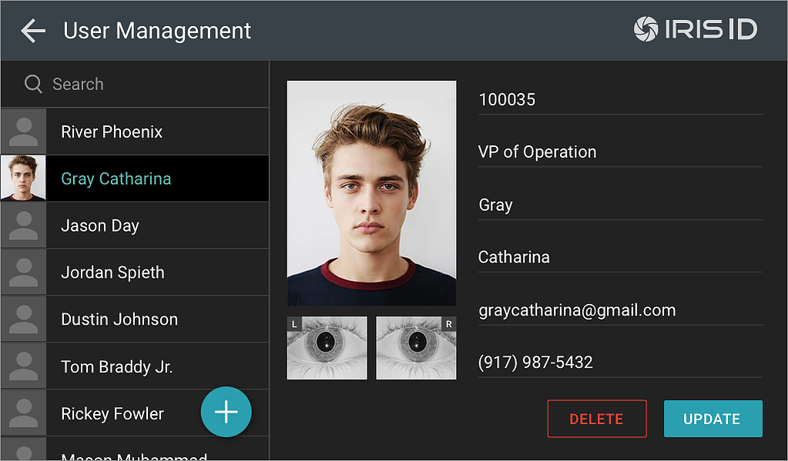
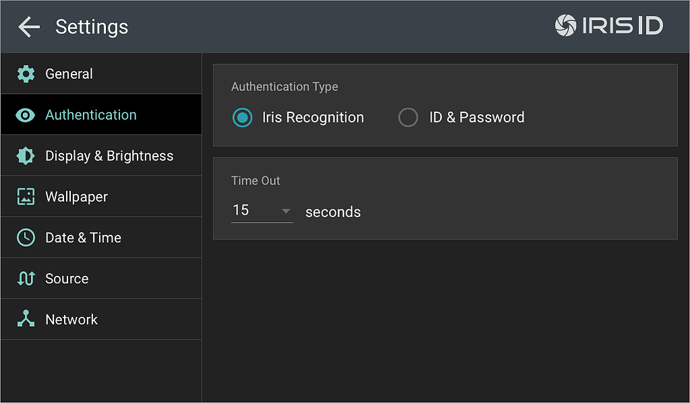
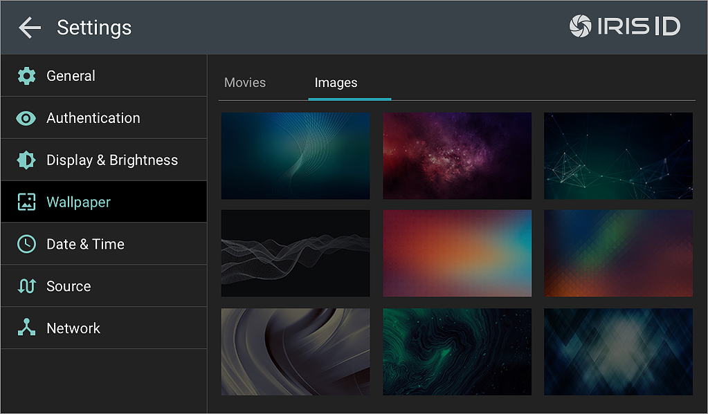

Iris ID Systems – Multimode Biometric Recognition Software
Multimode biometric solution combining face and iris recognition – designed for Android touchscreen devices, commercially launched worldwide.
Overview
Multimode biometric recognition software combining face and iris recognition into a single solution. Worked closely with the development team and Iris ID CTO on UI/UX, visual design, and product management.
Commercially launched in 2019, worldwide.
Scope
- UI/UX for multimode biometric capture & verification
- Visual design system tuned for touchscreen devices
- Product management across engineering & QA





Previous
← Bakkt App
Next
SpareMin →